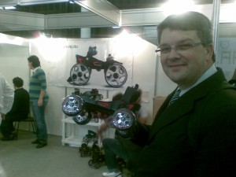

vamo, vamo, vamo…
Alecão
Engenheiro de Software que mora em Santo André-SP
Home page: http://www.dundes.com/wiki/Alex/HomePage
Jabber/GTalk: alex.dundes@gmail.com
Posts by Alecão
Conte a todo mundo o que você está fazendo e que pretende entrar em forma
48 years
by Alecão
in Ex-sedentário
O Claudio outro dia me passou os 10 conselhos de Karnazes e disse que aquilo serve para ele como um mantra que ele repete sempre que pode.
A ideia era imprimir e “colar no guarda-roupa” mas resolvi fazer diferente. Resolvi “colar no blog“.
Sobre o conselho 4 (Conte a todo mundo o que você está fazendo e que pretende entrar em forma). Posso dizer que foi a minha primeira ideia. Antes mesmo de começar tudo, eu criei este blog e com certeza o resultado é compensador, já temos casos de pessoas que se motivaram lendo o blog e a mim mesmo serve como combustível. Portanto o quarto conselho eu já cumpro com toda certeza.
Hoje acordei às 5 e meia, foi horrível, xinguei mentalmente a mim mesmo por ter criado todo este contexto, a sorte foi a roupa posta ao meu lado da cama, pronta para vestir. Dei de cara com o orvalho (sereno), bem, já estava na rua, na grama meu tenis encharco… não teve jeito fui para calçada arriscando lesionar o joelho. Mas fiquei feliz por ter conseguido treinar (T012) por 34 minutos sem parar.
Running Show
28 years
by Alecão
in Ex-sedentário
Sexta passada, estivemos eu e o Claudio na Running Show, foi interessante pois nunca havia estado em um evento destes. Foi legal ter visto algumas novidades como um patins que se adapta ao tênis. Faltou pouco para o Claudio vestir no pé e sair andando…
Depois do rolê em que vimos várias tranqueiras entre frequencímetros, esteiras da Nasa e por ai vai, entramos no estande da Mizuno e fizemos o teste do pedígrafo. Foi bem engraçado ver o Claudio de terno e descalço na esteira. 🙂
O meu teste deu a não surpresa que meu pé “não é legal” (para não dizer chato) e que eu tenho a pisada sub-pronada (ou supinada, quando pisa com o lado externo do calcanhar primeiro), o Claudio já deu que tem a pisada normal e também a pisada sub-pronada (coisa de primos univitelinos). No meu caso a sugestão de uso foi o Mizuno Wave Creation 10 Ultra Mega Blaster Fucker Very Expensive, apenas! nenhum outro modelo baratinho serve para o meu pé chato e bobo. Ao Claudio foi sugerido além do mesmo sugerido para mim, ainda outro modelo que não lembro o nome (mais era mais barato). Nos comentários o Pietro comentou que comprou este tenis. Pelo que vi vale a pena, mais para frente vou quebrar o meu porquinho.
Para fechar, não podiamos deixar de namorar as speeds tops de linha. Com certeza valeu a visita.
PS.: Hoje corri 25 minutos no gramado (T011) perto de casa… Eram 5 da manhã… Estou morto de sono agora!
Bem-vindo, Thiago Zamith
08 years
by Alecão
in Ex-sedentário
Temos um novo “ex-sedentário”, entre aspas mesmo porque ele nunca foi sedentário, mas está entrando para o nosso time de “postadores”. Thiago trabalha comigo (com informática) mas sempre amou os esportes, tanto que faz faculdade de educação física. Vou deixar que ele mesmo se apresente para nós.
T010 – No Jaraguá
08 years
by Alecão
in Ex-sedentário
Minha mulher queria ver a mãe dela. E nesse instante pensei “preciso criar a oportunidade” (oportunizar como diz o Claudio). Vesti a roupa de corrida sem saber o que estava por vir. Quando estavamos a caminho, ela me sugeriu descer antes (pausa)….
Gooooooool do Corinthians, Ronaldo!
…(Voltando) de chegar na casa da minha sogra e aceitei a idéia. Quando estava no ponto mais alto da Raimundo e de lá fui correndo para a casa da minha sogra. Durante 18 minutos eu consegui correr, depois havia uma subida, sol, muito suor, não deu, caminhei até a casa da minha sogra, totalizando 36 minutos. Preciso lembrar de treinar com o sol mais fraco… Era 12:30 🙂
PS.: Claudio, para o post da Running Show, preciso descarregar as fotos do celular e até agora não achei o cado de dados.
T008 e T009 – Voltando depois de um tempo parado
38 years
by Alecão
in Ex-sedentário
Mudanças… mudanças… mudanças… Não fui feito para isso. Gosto de padrões, gosto de tudo do mesmo jeito, dia após dia. Quando a coisa muda, ansiedade, angustia e por ai vai… Não vou explicar o porquê parei, mas quero reforçar que é o blog e os comentários que leio que me fazem continuar. Ontem fui com o Claudio na Running Show e ver um ambiente como aquele, me ajudou a motivar. Devemos “respirar” para motivar. Vou escrever um post reportagem sobre o que vimos e fizemos na Running Show em breve.
Saindo do Running Show, acabei me enrolando com os trocados do busão. Resultado, estava no terminal Sacomã sem dinheiro para pagar a integração com o intermunicipal, perto da meia-noite e os caixas eletrônicos do terminal estavam em manutenção. Tive que correr (literalmente, T008) até a Drogasil da Silva Bueno, ufa, mas deu tempo graças a Deus.
Hoje no sabadão com sol (viva!) catei a mulher e as crianças e fui no Parque Chico Mendes. O sol estava forte e acabei correndo (T009) por 33 minutos. Sei, diminuiu! Mas não estou triste por isso. Tudo é trabalho para a mente e o corpo acompanha na sequência. Rumo a Sansung 10k, sei que tenho apenas 57 dias e cada dia precisa ser trabalhado, com conciência e prudência chegarei lá. Após o treino, brincar com as crianças não tem preço. É exatamente isso que eu busco.
Rumo a Samsung 10K São Paulo Classic
08 years
by Alecão
in Ex-sedentário
Anote na sua agenda: dia 22 de novembro você vai participar de uma das maiores e mais tradicionais corridas de 10Km do Brasil, a Samsung 10K Corpore São Paulo Classic –Troféu Zumbi dos Palmares, que chega esse ano a sua 15ª edição.
Convidei o Claudio para esta corrida e ele me respondeu:
Deus atendeu minhas preces.
Estava receoso de ficar insistindo para inscrever-nos logo para uma corrida e com isso desanimá-lo.
JÁ É!!!
Essa corrida uma das tradicionais da corpore. … Mas eu vou onde vc quiser ir. CARA QUE SURPRESA BOA!!!! Essa.
Vc me convidando.
Então assumimos publicamente o compromisso de terminar esta prova (nem que seja em último 🙂 ).
Meu amigo Thiago Zamith, também irá nesta corrida.
T007 – Aumentei meu tempo
08 years
by Alecão
in Ex-sedentário
Ontem, após postar sobre o treino de domingo troquei de roupa e com muito sono, mas muito mesmo, fui treinar. Incrível, estava só o bagaço e por ter escrito que iria caminhar, não podia voltar a trás. E fui na grama que já comentei aqui várias vezes.

Peguei a imagem acima para explicar melhor o meu treino, eu moro no marco “A” (que está deitado 🙂 ). Vou a pé até o ínicio do gramado e começo o treino. Ontem consegui dar 7 voltas (as voltas são entre as 2 setas vermelhas) e depois vou trotando até chegar em casa, inclusive a volta é ladeira.
Ontem estava inspirado, no total treinei por 53 minutos. O Claudio havia me dito do salto que acontece no começo, acredito que já estou nesse salto e já no sétimo treino. Estou muito feliz com meu resultado.
Atazanando os tios
38 years
by Alecão
in Ex-sedentário
Logo após o treino de domingo, saindo do parque Chico Bento, ops, Chico Mendes, passamos na casa de nossos tios Edson e Sandra. Só então achamos um fotógrafo (tio Edson) para registrar aquele momento. Aqui vão as fotos tirada no domingo passado (30/08/2009):
Mas o porquê usar o verbo “atazanar” no título? Claudio, convido você a editar este post e explicar…
Usamos, por coincidência, o verbo atazanar do mesmo modo como emprega a acepção 4 do Houaiss:
4 Derivação: sentido figurado.
incomodar, importunar insistentemente; atanazar, atazanar, azucrinar
Ex.: passa o dia a a. o avô
Importunamos e incomodamos nossos tios, tudo com uma insistência que nos é peculiar.
Festejando o níver do Claudio
18 years
by Alecão
in Ex-sedentário
Faz tempo que não coloco meus testemunhos, apenas lembando rapidamente na sexta passada (28/08/2009) eu peguei carona com um colega de trabalho que me deixou no caminho e fui andando (T005) até minha casa, foram 36 minutos andando.
No domingo (30/08/2009) o Claudio veio até minha casa, veio junto com o Henrique, que ficou na bricando com a Olívia e o Maurício (meus filhos) e fomos trotar no parque Chico Mendes que fica em São Caetano do Sul (T006).
Coincidentemente o ínicio dos treinos foi exatamente no dia do meu anivesário (07/08/2009) e só nos econtramos agora, um dia antes do seu aniversário (31/08).
Um dia bem ensolarado, tinham muitas pessoas no parque. Entramos no parque e já começamos a trotar. Primeiro fomos para o bosque que tem no parque e logo ficou pequeno e continuamos trotando por toda extensão do parque. Treinar em dupla tem outra cinemática, foram conversar, assuntos sobre corridas, como estimular mais. Sinto o Claudio um verdadeiro professor no assunto. Já depois dos 40 minutos dei uma parada de 2 minutos, recuperando os batimentos cardíacos… O Claudio continuou, mostrando que já está mais preparado que eu, mais eu alcanço ele com certeza. Cansei…chega e o cronômetro marcava 49 minutos. Isso a marca do Claudio, a minha foi 47 minutos (descontando os 2 minutos de recuperação). Para mim foi uma marca histórica, que espero repetir em breve.
E desta forma foi que comemoramos o aniversário antecipado do Claudião. PARABÉNS PRIMÃO… E no próximo aniversário quero te ver como um Ex-Sedentário!!!
Agora são 20:35 e estou criando coragem para ir para rua… Vamos lá Alecão!!!… Saia já dessa cadeira. 🙂
Feliz aniversário Claudião!!!
28 years
by Alecão
in Ex-sedentário
Claudio, antes de postar o treino de ontem, não podia deixar de desejar meus parabéns… Muitos aninhos de vida… E para lembrar os velhos tempos vai um videozinho (meu presente, espero que goste):
Aos chatos de plantão, eu sei que aniversário de nascimento em inglês é birthday e que anniversary é usado para aniversário de casamento, por exemplo.
.jpg "DSC01769 (1024x576)")
.jpg "DSC01784 (1024x576)")
.jpg "DSC01823 (1024x576)")
.jpg "DSC01844 (1024x576)")


.jpg "IMG_7308 (1024x768)")

{kind=link}
{kind=link}
{kind=link}
Últimos comentários